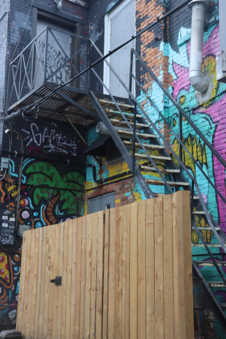

Home
Graffiti
Mural
COLLECTIONS OF GRAFFITI

While strolling the downtown streets of St. Catharines, I stumbled across what is known as “Art Alley.” This alley is the local title for a graffiti-filled stretch of walls along an alley spanning one block between James Street and Garden park.